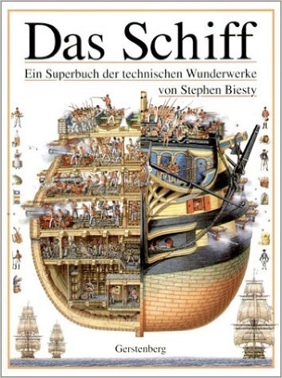
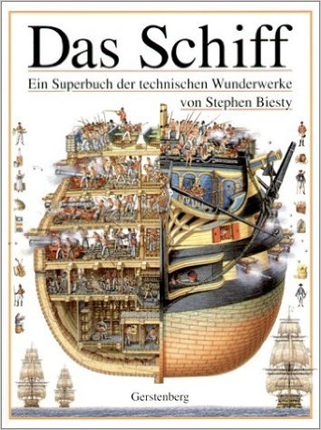

Forschung und Entwicklung: Dezentrale & Sichere Dateisynchronisation «brig»

Brig als Name:
- Man operiert auf Streams. (Wie eine Brig auf dem Golfstrom)
- Repositories sind Datenhäfen.
- Sync könnte man "ship" nennen
- Der Besitzer eines Repo ist der Käpt'n.
Was haben wir vor
Warum nicht zentral?
Vorgehen:
- Erst Masterarbeit, evtl. mit F&E.
- Dann Exist Gründerkredit um Weiterentwicklung zu gewährleisten.
- Ziel: Wissenschaftliche Mitarbeiter um Forschung zu ermöglichen.
Knoten-Typen:
- Normaler Client
- Archivierungsknoten
- Backupknoten
- ...
- Nicht verhandelbar. :-)
«git für große Dateien in einfach und sicher.»
- Dezentrale, sichere Alternative zu Dropbox und Konsorten.
- Entwicklung eines simplen Prototypen als Masterarbeit.
- Einsatz bewährter Sicherheits-Standards.
- Open Source Software und offene Entwicklung.
Hauptaugenmerk:
Datenintegrität, Sicherheit & einfache Benutzbarkeit.


Vergleich

Markante Features
Insgesamt "Unternehmenstauglicher" als viele andere.
Deduplizierung: Eine Datei muss prinzipiell nur einmal im Netzwerk gespeichert werden.
- Verschlüsselte Übertragung und Speicherung.
- Kein Single-Point-of-Failure.
- Kompression & Deduplizierung (optional; mittels brotli)
- Speicherquoten & Pinning (Thin-Client vs. Storage Server)
- Versionierung mit definierbarer Tiefe.
- Benutzerverwaltung mittels XMPP.
- 2F Authentifizierung und paranoide Sicherheit.


Usecases
Nutzbar als…
- …Transferlösung (Hyperlinks möglich).
- …Synchronisationslösung.
- …Backup- oder Archivierungslösung.
- …Versionsverwaltung.
- …verschlüsselten Safe.
- …als Plattform für andere Anwendungen.
(Oder in einer beliebigen Kombination)
Technisch
Wir fassen uns kurz.

Finanzierung
Jetzt wird's schwierig.
Zum Vergleich: Boxcryptor hat 400.000 bekommen. Für ein Jahr.
- 50% der Finanzierung durch 1-2 Unternehmen.
- 50% vom Freistaat Bayern.
- Arbeitsphase auf 3 Jahre angesetzt.
>>> pro_mann = 12 * 3500 # = 42000€ >>> pro_jahr = 2 * pro_mann + 30000 # = 114000€ >>> budget = 3 * pro_jahr # = 342000€
Monetarisierung
- Zwar wissenschaftliche Mitarbeiter primär.
- Consultants (nicht mit dem Produkt, sondern dem Drumherum)
Mögliche Einnahmequellen, durch…
- …bezahlte Entwicklung spezieller Features.
- …Supportverträge.
- …Mehrfachlizensierung.
- …Utility Bereitstellung (LDAP, yubikeys, …)
- …zertifizierte NAS-Server.
- …Schulungen, Lehrmaterial und Consulting.
- …


 
Fragen?